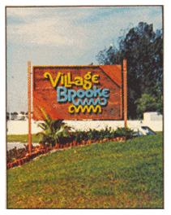
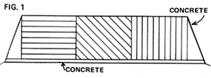
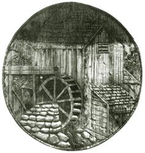
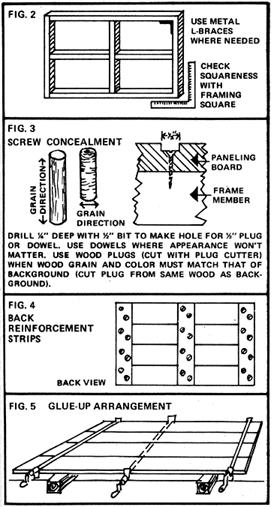
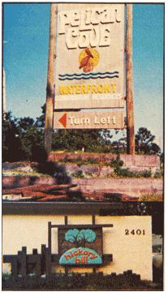
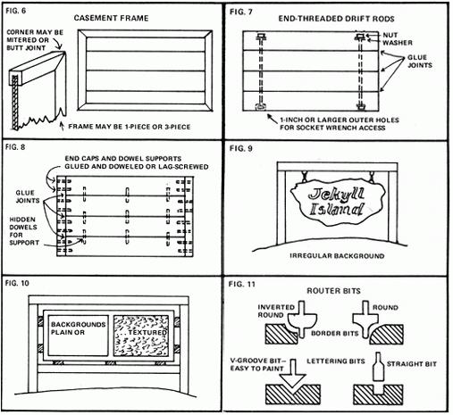
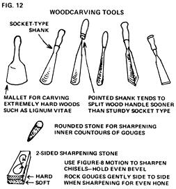
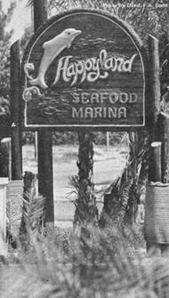
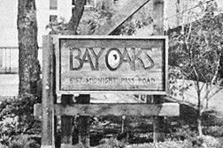

I have a really nifty self-employment business-carving, routing, and otherwise constructing dimensional wood signs that I'd like to tell you about. And why am I so willing to turn potential competitors on to my bread and butter? Three reasons prompt this seemingly foolish decision:
First, I'm aware that most back-to-the-landers have an urgent need to make some kind of living supplemental to their farming efforts. Failure to do so has ruined a lot of otherwise fine homesteads, and I wouldn't feel right about concealing an idea that could be the perfect answer to someone's financial problem. (I'll admit that I might not be quite so generous if it weren't for Motive No. 2: My own progress as an artist/writer is promising enough to stand a little competition in the sign department.)
The third reason I want to share my knowledge involves aesthetics. Handsome, well-designed, carefully crafted wooden signs are an asset to the landscape or city scene and an alternative to the obtrusive plastic and neon obscenities which currently line most thoroughfares. If more folks take up my craft, we should soon have more beautiful signs decorating our commercial environment.
So much for my motivation. What about yours? Why should you be interested in an offbeat occupation like sign making, anyhow? Well, mainly because it's both satisfying work and a good way to earn a living. By plugging away at a reasonable pace, you can easily make $10,000 a year . . . without the hassle of working for someone else at a job that isn't distantly related to your personal destiny (or maybe even your abilities). And if you don't want to get in that deep, I'm sure a freewheeling part-time approach would do well as a supplement to a farm income.
Still, sign making isn't everyone's cup of tea . . . and you'll be better prepared to judge its potential in your own case when I've told you what goes into those creations you see in the accompanying photos.
You do need some basic abilities to excel at my craft. A good sense of design is indispensable, and a graphic arts background or knowledge of type styles very useful. (You'll learn many forms of lettering in time . . . but until you do, never sketch a layout without a type reference book at your side.)
Remember, too, that the soul of an artist won't get you far in this business unless you also have the hands of a craftsman. . . plus the patience to cope with such mundanities as endlessly guiding power tools around rigid patterns. And if you decide to go into sign making on a regular basis, you'd best have some business sense. Like it or not, part of your working time will be spent confronting hardheaded and seemingly unappreciative customers about a subject in which they couldn't be less interested: your payment.
You can begin a sign business like mine with very little cash outlay . . . because, when you take on a job, you'll collect a 50 percent deposit which will cover all immediate expenses such as wood, glue, paint, hardware, tool rental fees, and extra help (when needed). There aren't many other enterprises you can start for $100 to $900 with the expectation of near-instant success and profit!
Your workshop can be located quite conveniently in a garage or other outbuilding. (The work is dusty and noisy, and I wouldn't recommend doing it in the house.) If you lack a permanent wind- and water-tight shop, you can erect a partial shelter . . . but, if you do, you'll have to limit operations to good weather (because of the shock hazard from power tools that get wet and because the glue you'll be using sets only at a temperature above 70° F).
You will, of course, need some vehicle in which to visit customers, carry materials home, and so forth. If you have no truck, deliveries can be made in a trailer pulled behind your car.
Standard hand tools used in sign making include the following: hammer, saw, tape measure, level, steel yardstick and T-square (for layout), bar or pipe clamps-6 feet or longer-to hold glued materials, mallet and assorted woodcarving tools, and a tall stepladder.
You'll also need a number of power tools: router and router bits (carbide are much preferred for durability), an electric drill with a full set of bits (including one tipped with carbide for masonry work), a circular saw, belt sander, and power planer. Eventually you'll want bench versions of the above for stability and accuracy . . . but rented portable tools, fitted with long outdoor extension cords, will do fine for your first few jobs.
Your first move after signing a contract for a sign job is to rush to the lumberyard-deposit in hand-and personally pick out dry, seasoned, unwarped, and unsplit lumber.
The kind of wood you select depends on the nature of the work to be done. Although pine, fir, and spruce can be used for exterior signs which will be stained or otherwise protected from the weather . . . redwood, cedar, and cypress are far better. But beware of heavy, wet cypress! After weeks or months of drying in the sun it will split unmercifully and destroy the appearance of a completed job . . . and with it, your reputation.
Pressure-treated lumber is acceptable when used in large chunks (say, for signposts) but smaller pieces warp badly. Plywood will split apart after a year outdoors unless the outer layers are marine grade or smooth fiberboard . . . and even then the material is far from permanent.
Exotic woods such as mahogany, teak, and rosewood are superb in color, grain, and general appearance. They go well with fine furnishings and are excellent for either exterior or interior settings where a luxury look, is desired. Native American hardwoods-walnut, cherry, maple, birch, and ash-are good for indoor use, and the first two-in particular-have a beautiful rich color.
Yes hardwoods do have one major drawback: they're hard. On the other hand, that very characteristic makes them consistent in their workability and less prone to split.
The form in which you buy lumber largely hinges on your answer to a basic question: How do you make an oversized signboard out of narrow planks? And that decision, in turn, depends on the finished appearance you want. Will, for instance, a background of inch-thick tongue-and-groove stock with attached cut-out symbols and letters do the job? This is the fastest and least expensive construction method for dimensional wooden signs, and has been used in many handsome creations. (See Fig. 1.)
If you want a more interesting surface, however, you may decide to cut the symbols and letters directly into their background with a router. In that case tongue-and-groove stock is entirely inappropriate . . . and if the planned sign is too large to be contained on one board you'll have to glue several together along their edges. This means that the surfaces to be joined must be made perfectly straight and flat so that they'll butt against one another without gaps. If you have no jointer-planer, arrange to have the planks edge-planed at the lumberyard or a local cabinetmaking shop.
Another consideration in shopping for lumber is how much-if any-extra material you'll need to reinforce your creations and make them sturdy. A large sign of 1-inch planks, for instance, will require a supporting framework of heavier stock. Two-inch-thick boards need less strengthening, and timbers 4 inches thick remain strong even when deeply carved on both sides.
About costs: Wood prices vary, but count on paying at least 80 cents a board foot for good exterior grades. (A board foot is a piece of planking 1 foot wide, 1 foot long, and 1 inch thick.) At this rate, the 50 board feet needed for a typical job will cost you about $40.00. If the sign is of stock 2 inches thick, or each of its sides must be constructed separately, double that figure. In either case, add 10 percent to your purchase for wasted wood . . . and don't forget to figure in the price of two 14-foot posts for an outdoor installation (no, that's not too long . . . 3 or 4 feet of the supports will be underground), Typically, a pair of pressure-treated 4 X 6's will run you around $60.00. Redwood costs a bit more but is easily worked and exceptionally durable.
Once your materials are lined up, you can proceed to the actual fabrication of your customer's sign . . . beginning with the construction of the background.
A paneled look is easily achieved by building a framework of 2 X 4's as shown in Fig. 2 and covering it-on both sides, for neat appearance-with tongue-and-groove or plain-edged planks. Boards of any width can be used for this planking although narrower stock, of course, means a larger number of joints and fastenings and, hence, additional work.
Paneling can be attached to the framework with nails or screws. If the sign is to be erected outdoors, the latter fastenings should be brass . . . and at 10 cents apiece, the cost of such hardware is considerable. For this reason I prefer galvanized, dull-finish nails for most exterior structures.
If you do use screws, you'll want to give your work a finished look by concealing the heads as follows: Drill the screw holes with a 1/2-inch bit to a depth of 1/4 inch, insert the fastenings, and fill what's left of each hole with a short length of dowel or a plug of matching wood held in place with glue (Fig. 3). These fillers can be sanded down even with the sign's surface after the adhesive has cured. (It's possible, incidentally, to create decorative effects with plugs or dowels . . . but this is a time-consuming process and you should hesitate before offering it to a customer.)
If you don't want to go to the trouble of doweling, the screwheads can be disguised by a much faster method: Just brush on an enamel varnish that matches the color of the sign's background.
When the boxlike framework has been covered on both sides with paneling, you may find that the ends of the planks form irregular edges because some of the boards are longer than others. If so, smooth out the rectangle by sawing away the protruding ends. An appropriate stain or finish will complete the background. Letters and art can then be cut out with a heavy-duty sabre saw and attached (over 1-inch spacers, if added depth is desired). Such a sign looks neat and sophisticated, especially if its paneling matches the exterior architecture of the building to which the billboard or nameplate or whatever refers.
I should mention that it's possible to produce a low-cost, one-sided paneled sign by fastening tongue-and-groove lumber directly to reinforcement strips-2 X 4 or thinner-which run the length of the background (see Fig. 4). This method should be used only when appearance is secondary in importance to expense . . . or in a location (against a wall, for example) where the cross braces won't be visible.
Perhaps you plan to attach your sign's background to a framework of 2 X 4's-as described above-but want to eliminate the cracks where the boards meet. The answer is to edge-glue the planks together to form a larger, "seamless" area. This method of construction is appropriate for lumber of any thickness and width . . . but bear in mind that the narrower the boards are, the more edges you'll have to even up and the more seams you'll have to fill with adhesive.
I've already mentioned that the adjoining surfaces of the background planks must be perfectly straight before they're glued together so that no cracks will weaken the sign or spoil its appearance (another good reason for not buying warped lumber in the first place). If you didn't have the boards edge-planed at the time of purchase, run them through a jointer-planer until they're smooth enough to lay side by side with no major gaps showing. Extremely rough stock may need to be recut with a table saw before this final finishing.
Next, build a framework for your sign, but don't attach the boards directly to it. Instead, set the structure aside and proceed to the gluing process.
OK. A word about glue: Marine grade plastic resin, resorcinol, and epoxy all have excellent resistance to weather and may be used in sign construction. Don't attempt to substitute white household glue, which is suitable only for indoor use.
Whatever adhesive you decide on, the actual gluing procedure is the same. Lay the planks which will form the background across a couple of sets of matching 4 X 4's (which merely serve as supports and aren't used in construction). Flip the boards up, one by one, and brush their edges liberally with your chosen adhesive. (Glue manufacturers specify exact thicknesses, but I find that a too-heavy application is permissible since any excess runs off.)
Align the coated edges closely and press them together with the help of several clamps placed at equal intervals. (Don't tighten the fastenings too firmly on 1-inch lumber, or the boards may pop out of position.) If you apply three clamps to one set of planks, alternate their placement: That is, if two are laid across the top of the background, the center holder should be placed underneath (Fig. 5). This tends to prevent the entire sign from warping into a shallow curve.
Complete drying is possible only at temperatures above 70° F and will take 12 hours or so, depending on the glue. You can then remove the clamps and smooth the newly jointed surface with (A) a power planer and (B) a belt sander equipped with, first, a roughly textured belt and, second, a medium one. The result will be a perfectly flat background with almost no visible glue lines.
Screw or nail the sanded background to the framework and run a circular saw around the irregular edges until they correspond perfectly with the dimensions of the frame below. Repeat this process on the other side of the supporting structure, and you'll have a neat two-faced signboard to ornament with either a routed design or raised cut-out letters and art. (It's best not to try routing or hand-carving 1-inch lumber, which is a little thin for the purpose.)
Edge-glued signboards can be fabricated without underlying frameworks and braced by other means (which are chosen according to the thickness of the stock used in the panels).
Is your sign's background made of edge-glued 1-inch lumber? Such a structure may be reinforced with strips of wood screwed to the backs of the planking, as mentioned above (see PANELED BACKGROUNDS OVER FRAMEWORK). If a good appearance is wanted on both sides, you can place two such units back to back and enclose the pair in a casement frame (see Fig. 6).
Edge-glued boards which are two inches or more thick can be reinforced in an entirely different way . . . with 1/2-inch dowels or steel drift rods (available threaded at both ends from welding shops or in shorter lengths from hardware stores) run right through the planks. These invisible but extremely effective braces will leave you confident of your sign's permanence . . . and here's how to install them:
DRIFT RODS. Ideally-when they're used-at least two drift rods should be run through all the boards which make a laminated background (see Fig. 7). A perfectly aligned hole-5/8 inch in diameter if the rods are of 1/2-inch steel-must be drilled through every piece of wood to receive each reinforcement. Check the alignment by inserting the fasteners temporarily, edge-glue the planks as instructed above, and then remove the metal rods before the adhesive can trap them.
When the glue has hardened, drill an access space-at least an inch deep and an inch wide-at the ends of the laminated holes through which the rods fit. The lengths of steel (which should be about an inch shorter than the final width of the sign at their points of penetration) are next placed in position. A socket wrench then can be slipped into the access holes to tighten washered nuts onto the threaded ends of the rods, thus locking the glued boards together even more firmly than the adhesive can hold them. As a finishing touch, the inch-wide openings on the edges of the laminated panel can be filled with plastic wood which is stained or painted to match the sign.
DOWELING. This can be a tricky business, because the fastenings won't fit unless the adjoining holes are aligned perfectly (see Fig. 8). A doweling jig-available from Stanley for under $15.00-is a big help. With a little skill, though, you can get good results from dowel centers (inexpensive little metal pins of various diameters, used to mark the correct locations of corresponding holes).
To work with dowel centers, drill a 1/2-inch hole for the first dowel, at a perfect right angle, exactly in the middle of one board's edge. (That is, if the wood is 2 inches thick, the hole's center will fall at the 1-inch mark.) Then place a dowel pin in the hole with its point sticking up. When you set the next board in position, the metal tip will prick the precise site for the corresponding hole. Remove the second plank and drill it at the spot indicated.
When all the holes have been drilled into both facing surfaces, cut thin grooves around the dowels' ends to hold the adhesive, apply glue to the dowels and board edges, fit the fastenings into their sockets, and push the planks together.
END CAPS. For added strength, dowels or rods may be supplemented with end caps which are themselves doweled in place (see Fig 8). These reinforcements used alone are of value only on signboards under 5 feet long, but are highly recommended on larger signs when used in combination with internal dowels or drift rods.
If a background of irregular shape is wanted, boards can be edge-glued as described and the roughly rectangular flat surface cut to any desired form with a band saw or heavy duty sabre saw (see Fig. 9).
Another interesting variation is a textured background, produced with strokes of a gouge, chisel, adze, axe, or other woodworking tool (see Fig. 10). The size of the blade should be appropriate to the size of the area: that is, a narrow gouge is the best choice for a small sign.
Once the background of a sign is complete, it's time to add the letters and artwork. Whatever method you use to do this, you must begin by making a full-size paper pattern based on the original concept of the sign as approved by the customer.
The pattern is most easily made by transferring the small-scale layout to a background-sized sheet of 40-inch-wide tissue paper (available from any large art supply dealer): To do so, mark a grid of-say-1-inch squares on the original drawing. Then decide on a scale . . . perhaps 1 inch =1 foot. Tape the tissue paper to the sign's background, lay out a 1-foot grid on the sheet, and reproduce the design by drawing the contents of each small square in the corresponding large space.
When you have a perfect copy of the original concept on the full-size sheet of tissue, transfer the outlines of the letters and art to the background itself. I prefer to do this with giant carbon paper (also sold by art supply stores), because the marks stay put a long time and are dark enough to be seen while you work on the wood with router or carving tools.
If the sign is to consist of cut-out symbols on a paneled background, proceed to make and attach the shapes using the transferred outline as a placement guide. Otherwise, go ahead with one of the techniques described in the following sections.
Routed signs-the type usually seen in state and national parks-are produced by guiding the whirling bit of the high-speed router around the letters and other shapes on your pattern.
Two kinds of cut-the V groove (which is easier to paint) and the straight bit-are normally used in sign work. (See Fig. 11.) Border edging bits, available in several contours, are handy to instantly round or otherwise finish the edges on signs and individual cut-out components.
The router's cut is clean and fast, especially when carbide bits are used on dry wood. As a rule, however, it's not practical to rout deeper than 1/2 inch, since the bit's action meets with too much resistance beyond that depth. If you want to make a deeper cut, you should trace one pass around the design, then reset your router bit and make another pass.
Hand-carving, properly done, is by far the most time-consuming way to finish a sign . . . and the one that yields the most satisfying results, in terms of both appearance and enjoyment of the work. It's very pleasurable to hand-form elegant curves and delicate cuts which can only be made perfectly with sharp tools.
Hand-carving equipment is shown in Fig. 12. If you're going to be doing a lot of roughing out and wood removal, you'll need a set of at least three socket gouges and chisels (tools with pointed shanks will split their handles much sooner than those with socket bases). A mallet is used to strike the above implements with enough impact to cut out a fair quantity of wood. You'll also want some lighter duty, pointed-base chisels, semi-circular gouges, and V-shaped carving tools.
It's imperative to keep these implements well sharpened on a high-quality whetstone with both a medium and a fine grit face. Instructions generally come with the stone, or can be found-along with descriptions of specific woodworking techniques-in a book on wood carving.
If nicks appear in your tools' cutting edges, never grind the blades on the standard high-speed sharpening wheel. This will destroy the temper of the metal. Use either a low-speed sanding belt or a low-speed wheel which passes through water to handle this heavy sharpening without generating too much heat.
In this technique, the V bit of the router is first used to make a clean outline around the letters and other shapes, and the background within the resulting line is then removed by carving (leaving neat gouge strokes). It's an easy way to get a hand-carved look.
Raised letters are cut out with a heavy duty sabre saw or band saw and affixed to the sign background. To avoid splitting-a real nuisance with cut-out characters, especially small ones-it's vital to have a sabre saw that doesn't vibrate and to clamp the material so that it can't move while being cut. Any split that occurs in spite of your care can be repaired with a flat mending plate glued across the back of the break . . . or you can fix the split with a corrugated metal fastener such as is used to repair furniture.
Instead of trying to hand-cut very small raised letters, you're better off to buy them through a plastic sign shop . . . at a discount, since you are, after all, a sign contractor (licensed or not) and the dealer should be glad to have your relatively heavy volume of business. The tiny plastic characters are well worth their small cost, because they provide a precision which would be nearly impossible to duplicate in your own workshop.
PREPARATION FOR FINISHING
The completed background, letters, and art must be painted or otherwise finished to make the sign colorful and resistant to weather. In most cases, sanding is a necessary preliminary. The more the wood is rubbed down, the more its natural grain shows through. A belt sander greatly facilitates this job . . . unlike a disc machine, which leaves very undesirable circular marks on the surfaces.
Although most signs don't require treatment with wood filler, this may be needed if a really slick finish is desired and/or paint or varnish is to be applied over an open-grained wood.
After an exterior sign with a pronounced grain to the wood has been carved or routed, it may be deeply scorched with a propane torch and then vigorously brushed with a wire brush to both eliminate the charred layer and leave a deeply distressed "driftwood" effect.
This work is time-consuming and dull (a typical sign, with posts, may require 6 to 12 hours overall) . . . and you should wear a protective face mask during the brushing process to avoid an instant case of black lung acquired by inhaling too much floating carbon. A sandblasting unit, with air compressor, will give the same effect with less labor, but the initial expense of such equipment may be prohibitive.
When you've completed the burning and brushing procedure, the surface of the wood will be brown . . . but will quickly turn gray on exposure to the weather. The scorching seals the outer layer of the sign and its posts and is an effective protection against water. Colorful letters and artwork can be added with paint as described in the following following section.
Paint-a quick color treatment for signs-is applied in at least two layers. The best first, or primer, coat is a white, flat, exterior sealer. Gesso, the expensive artists' preparation, may be substituted . . . but why pay more when you can use acrylic house paint?
The second coat should be glossy enamel-usually oil based since it repels the ravages of wind and weather like duck's back and gives the best outdoor service. (Nevertheless exterior signs need repainting at least once a year . . . more often in rugged climates.) Yacht enamel and Sherwin-Williams Bulletin or "One-Shot" Colors are excellent choices, and you can build up your palette gradually in whatever line prefer. Be sure to have a paint sample chart handy whey you're doing your selling, as the color specifications should be included in the contract and on the layout.
A word here about a couple of special painting problems. First, cut-out letters must be painted before they're affixed to a sign, both for ease of handling and to eliminate messy spills on the background.
A second hint concerns inverted (routed or carved) areas. Such surfaces can sometimes be painted with two coats or paint, each of which is allowed to dry thoroughly. The background is then gone over with a belt sander to leave a flawless flat surface surrounding the colorful, recessed symbols. This is a quick method, since the sanding will remove any slip-ups and it's permissible to be rather messy in applying the finish, which will eventually be left only in the relieved areas.
Oil stains-available in many shades shades-color a surface surface evenly and hide natural wood to an extent that varies with the type of product being used. Underlying grain is completely con cealed by opaque stain, but is partly visible through a semi-transparent formulation. (In the past few years, incidentally, the paint companies have developed very good waterbased stains. . . an alternative you might wish to try.)
Oil stains will hold up for several years without reapplication, and are your best choice where ease of maintenance is essential. If you want a sign to retain the full vibrancy and warmth of natural wood, however, varnish is the way to go.
This finish gives a slick, sophisticated look and helps to protect and preserve the natural color of the wood. (In case you were expecting absolute clarity, though, you should note that exterior varnishes contain an ingredient which acts as a sun barrier which also tints the protected surface a brownish shade.)
Exterior gloss varnish wears longer outdoors than a lowsheen product. All the same, either will have to be renewed at least annually (or may require complete removal and reapplication due to spotty finish). Near the sea or under harsh weather conditions, a varnish finish will need attention more frequently.
Gold leaf, which yields the only lasting gold finish, is applied by an elaborate process (also used in applying silver and copper leaf). Check carefully before you quote on this service! The initial expense of the material-pure gold-is high, and the work takes many hours. (There is, however, no satisfactory substitute. Metallic paint invariably tarnishes and disappoints.) Use a leaf finish only if the customer insists, and then only after warning him.
Some interior signs can be sufficiently protected by applying linseed oil, lemon oil, or the like every few months. The wood tones will shine through such a finish beautifully. Or, as an alternative, signs put up indoors may be waxed and then polished.
That, I think, pretty well covers the basics of sign making. The operation of this craft as a business, and some installation guidelines, will be taken up in Part II of this article (MOTHER NO. 37).
|
 6' x 10' sign with burned background and raised letters |
 IF SIGN IS 2-SIDED, PANELED BACKGROUND BOARDS MAY BE NAILED HORIZONTALLY, DIAGONALLY, OR VERTICALLY OVER 2 x 4 FRAMEWORK. IF SIGN IS 1-SIDED, SIMPLE BACK REINFORCEMENT STRIPS MAY SUFFICE (SEE FIG. 4). |
 A 5-1/2"" copper-rimmed cypress logo, subtly tinted with oil stains, for the Sawmill Inn Restaurant in Sarasota, Florida. |
|
 TOP: A large paneled background with raised letters and art. BOTTOM: An unusually mounted sign of carved cypress. |
 A 6'x 6' Sarasota restaurant sign of 4-inch-thick cypress. |
 Heavily varnished routed cypress, with decorative supports. |
|
 |
 |
 |